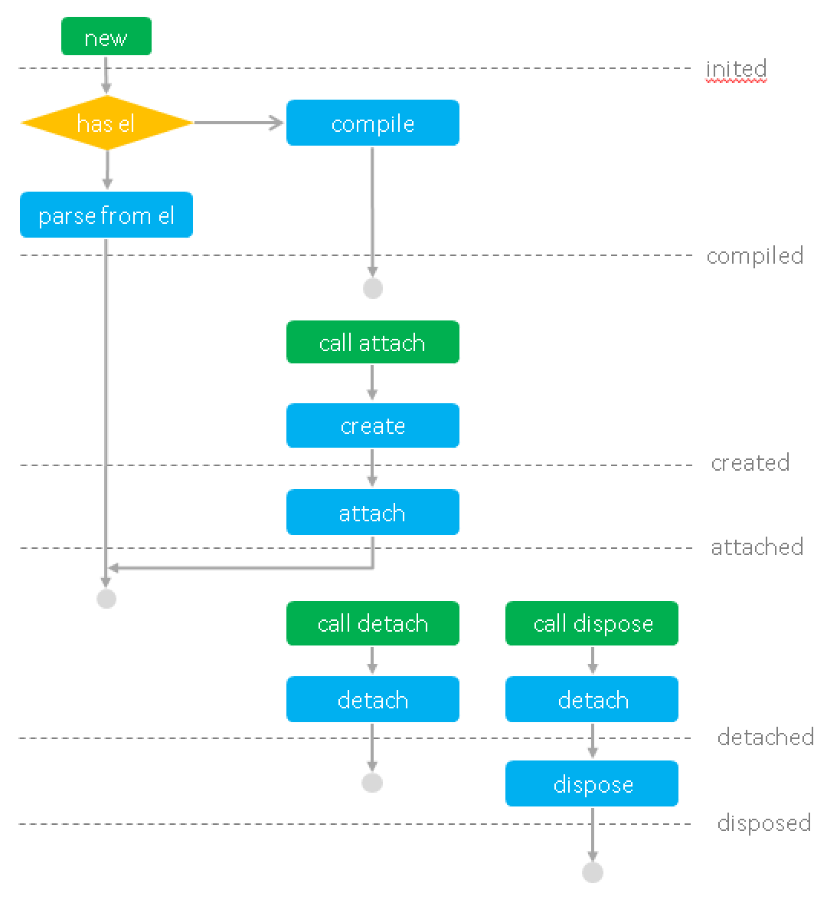

组件是 San 的基本单位，是独立的数据、逻辑、视图的封装单元。从页面的角度看，组件是 HTML 元素的扩展。从功能模式的角度看，组件是一个 ViewModel。
组件定义
定义组件最基本的方法是，从 san.Component 继承。San 提供了 san.inherits 方法，用于继承。
1 2 3 4 5 6 7 8 9 10
| function MyApp(options) { san.Component.call(this, options); } san.inherits(MyApp, san.Component); MyApp.prototype.template = '<ul><li san-for="item in list">{{item}}</li></ul>'; MyApp.prototype.attached = function () { this.data.set('list', ['san', 'er', 'esui', 'etpl', 'esl']); };
|
然后，通过 new 的方式就可以使用这个组件了。当然，通常你可能希望让组件出现在页面上，所以需要调用 attach 方法，将组件添加到页面的相应位置。
1 2
| var myApp = new MyApp(); myApp.attach(document.body);
|
通过继承的方式定义组件的好处是，当你使用 ESNext 时，你可以很自然的 extends。
对于不使用 ESNext 时，写一个 function 然后调用 san.inherits 再写各种 prototype 实在是有点麻烦，San 提供了快捷方法 san.defineComponent 用于方便地定义组件。
1 2 3 4 5 6 7
| var MyApp = san.defineComponent({ template: '<ul><li san-for="item in list">{{item}}</li></ul>', attached: function () { this.data.set('list', ['san', 'er', 'esui', 'etpl', 'esl']); } });
|
生命周期
San 的组件是 HTML 元素扩展的风格，所以其生命周期与 WebComponents 相符合。
inited - 组件实例初始化完成compiled - 组件视图模板编译完成created - 组件元素创建完成attached - 组件已被附加到页面中detached - 组件从页面中移除disposed - 组件卸载完成
组件的生命周期有这样的一些特点：
- 生命周期代表组件的状态，生命周期本质就是状态管理。
- 在生命周期到达时，对应的钩子函数会被触发运行。
- 并存。比如 attached 和 created 等状态是同时并存的。
- 互斥。attached 和 detached 是互斥的，disposed 会互斥掉其它所有的状态。
- 有的时间点并不代表组件状态，只代表某个行为。当行为完成时，钩子函数也会触发。如 updated 代表每次数据变化导致的视图变更完成。
通过声明周期的钩子函数，我们可以在生命周期到达时做一些事情。比如在生命周期 attached 中发起获取数据的请求，在请求返回后更新数据，使视图刷新。
1 2 3 4 5 6 7 8 9 10 11 12 13 14 15 16 17
| var ListComponent = san.defineComponent({ template: '<ul><li san-for="item in list">{{item}}</li></ul>', initData: function () { return { list: [] }; }, attached: function () { requestList().then(this.updateList.bind(this)); }, updateList: function (list) { this.data.set('list', list); } });
|
下图详细描述了组件的生存过程：

视图
视图模板
定义组件时，通过 template 可以定义组件的视图模板。
1 2 3 4 5 6 7 8 9 10 11 12 13
| san.defineComponent({ template: '<div>' + '<label><input type="checkbox" value="errorrik" checked="{= online =}">errorrik</label>' + '<label><input type="checkbox" value="otakustay" checked="{= online =}">otakustay</label>' + '<label><input type="checkbox" value="firede" checked="{= online =}">firede</label>' + '</div>', initData: function () { return { online: ['errorrik', 'otakustay'] }; } });
|
通常，将 HTML 片段写在 JavaScript 中是不友好的，我们可以把模板写在单独的文件里，通过工具或装载器去管理。
在 webpack + ESNext 环境下引用模板：
在 AMD 环境下通过 text plugin 引用模板：
1 2 3 4 5 6 7 8 9
| san.defineComponent({ template: require('text!./template.html'), initData: function () { return { online: ['errorrik', 'otakustay'] }; } });
|
强调：San 要求组件对应 一个 HTML 元素，所以视图模板定义时，只能包含一个 HTML 元素，其它所有内容需要放在这个元素下。
1 2 3 4
| <dl> <dt>name - email</dt> <dd san-for="p in persons" title="{{p.name}}">{{p.name}}({{dept}}) - {{p.email}}</dd> </dl>
|
组件对应的 HTML 元素可能是由其 owner 组件通过视图模板指定的，视图模板不好直接定死对应 HTML 元素的标签。此时可以将视图模板对应的 HTML 元素指定为 template。
1
| <template class="ui-timepicker">{{ value | valueText }}</template>
|
el
组件实例的属性 el 表示组件对应的 HTML 元素，组件初始化时可以通过 option 传入。
基本上在编写组件时不需要关心它，但是在初始化组件时如果传入 el，意味着让组件以此元素作为组件根元素。元素将：
- 不会使用预设的 template 渲染视图
- 不会创建根元素
- 直接到达 compiled、created、attached 生命周期
有时我们为了首屏时间，期望初始的视图是直接的 HTML，不希望初始视图是由组件渲染的。但是我们希望组件为我们管理数据、逻辑与视图，后续的用户交互行为与视图变换通过组件管理，此时就可以通过 el 传入一个现有元素。
组件将以传入的 el 元素作为组件根元素并反解析出视图结构。这个过程我们称作 组件反解。详细请参考组件反解文档。
数据
所有组件数据相关的操作，都由组件实例的 data 成员提供。
获取数据
通过 data.get 方法可以获取数据。
1 2 3 4 5 6
| san.defineComponent({ attached: function () { var params = this.data.get('params'); this.data.set('list', getList(params[1])); } });
|
data.get 方法接受一个表示 property accessor 的字符串，所以上面的例子也可以写成这样：
1 2 3 4 5 6
| san.defineComponent({ attached: function () { var param = this.data.get('params[1]'); this.data.set('list', getList(param)); } });
|
操作数据
data 上提供了一些数据操作的方法，具体请参考数据操作文档。
初始数据
组件在实例化时可以通过 option 传入 data，指定组件初始化时的数据。
1 2 3 4 5 6 7 8 9 10
| var MyApp = san.defineComponent({ template: '<ul><li san-for="item in list">{{item}}</li></ul>' }); var myApp = new MyApp({ data: { list: ['san', 'er', 'esui', 'etpl', 'esl'] } }); myApp.attach(document.body);
|
new 时传入初始数据是针对实例的特例需求。有时我们在定义组件时希望每个实例都具有初始的一些数据，此时可以定义 initData 方法，可以在定义组件时指定组件初始化时的数据。initData 方法返回组件实例的初始化数据。
1 2 3 4 5 6 7 8 9 10 11 12
| var MyApp = san.defineComponent({ template: '<ul><li san-for="item in list">{{item}}</li></ul>', initData: function () { return { list: ['san', 'er', 'esui', 'etpl', 'esl'] }; } }); var myApp = new MyApp(); myApp.attach(document.body);
|
过滤器
在定义视图模板时，插值是常用的展现数据的方式。在编写插值时，我们常使用 过滤器 将数据转换成适合视图展现的形式。
1
| {{createTime | dateFormat('yyyy-MM-dd')}}
|
内置过滤器
San 针对常用场景，内置了几个过滤器：
html - HTML 转义。当不指定过滤器时，默认使用此过滤器url - URL 转义raw - 不进行转义。当不想使用 HTML 转义时，使用此过滤器yesToBe - 当数据为真时，使用的值yesOrNoToBe - 当数据为真或假时，使用的值nullToBe - 当数据为 null 时，使用的值。不为 null 时使用原值
后面三个内置过滤器的常用场景请参考样式文档。
定制过滤器
通过定义组件的 filters 成员，可以指定组件的视图模板可以使用哪些过滤器。
1 2 3 4 5 6 7 8 9
| san.defineComponent({ template: '<a>{{createTime | dateFormat('yyyy-MM-dd')}}</a>', filters: { dateFormat: function (value, format) { return moment(value).format(format); } } });
|
过滤器函数的第一个参数是表达式对应的数据值，过滤器调用时传入的参数从第二个参数开始接在后面。
注意：考虑到组件的独立性，San 没有提供全局过滤器注册的方法，组件要使用的过滤器必须在自身的 filters 中定义。
组件层级
我们知道组件体系下，组件必须是可嵌套的树形关系。下面从一段代码，做一些说明。在下面的代码中，AddForm 内部使用了两个自定义组件：ui-calendar 和 ui-timepicker。
1 2 3 4 5 6 7 8 9 10 11 12 13 14
| <div class="form"> <input type="text" class="form-title" placeholder="标题" value="{= title =}"> <textarea class="form-desc" placeholder="备注" value="{= desc =}"></textarea> <div>预期完成时间： <ui-calendar value="{= endTimeDate =}" san-ref="endDate"></ui-calendar> <ui-timepicker value="{= endTimeHour =}" san-ref="endHour"></ui-timepicker> </div> <div class="form-op"> <button type="button" on-click="submit">ok</button> </div> </div>
|
1 2 3 4 5 6 7 8 9 10 11 12 13
| var AddForm = san.defineComponent({ components: { 'ui-timepicker': require('../ui/TimePicker'), 'ui-calendar': require('../ui/Calendar') }, submit: function () { this.ref('endDate') this.ref('endHour') } });
|
components
组件中通常通过声明自定义元素，使用其它组件。
组件视图可以使用哪些子组件类型，必须通过定义组件的 components 成员指定。key 是自定义元素的标签名，value 是组件的类。
注意：考虑到组件的独立性，San 没有提供全局组件注册的方法，组件必须在自身的 components 中声明自己内部会用到哪些组件。
owner 与 parent
owner 与 parent 的概念已经被 react 明确过了，但这里还是要专门明确下。
owner 指的是目标在声明时位于哪个组件的组件视图中，其生存时间、交互的通信等行为都由 owner 管理。owner 必须是一个组件。ui-calendar 的 owner 是 AddForm 组件。
parent 指的是目标在视图中对应的直接父级元素。ui-calendar 的 parent 是其上层的 div。parent 对组件管理并没有直接的意义。
ref
子组件声明时如果通过 san-ref 指定了名称，则可以在 JavaScript 中通过组件实例的 ref 方法调用到。
提示：有了声明式的初始化、数据绑定与事件绑定，我们很少需要在 JavaScript 中拿到子组件的实例。San 提供了这个途径，但当你用到它的时候，请先思考是不是非要这么干。
动态子组件
在一些场景下，我们希望组件不在自身视图渲染时创建子组件，而是通过 JavaScript 灵活控制在未来的某些时间点创建子组件。比如：
- 浮动层子组件的 parent 不在其根元素 el 内，声明式用着不方便
- 列表只有在用户点击时才需要创建并展示
动态子组件对开发者要求更高，我们在这里给出一些需要注意的地方，下面节选的代码也做了一些简单的说明：
- 动态创建的子组件无需在 components 中声明类型
- 保证动态子组件不要被重复创建。常见的做法是在实例的属性上持有对创建组件的引用，并以此作判断
- 保证动态子组件能够被销毁。你可以在创建时 push 到 childs 中，或者在 disposed 中销毁它
1 2 3 4 5 6 7 8 9 10 11 12 13 14 15 16 17 18 19 20 21
| san.defineComponent({ mainClick: function () { if (!this.layer) { this.layer = new Layer(); this.layer.attach(document.body); } this.layer.show(); }, disposed: function () { if (this.layer) { this.layer.dispose(); } this.layer = null; } });
|